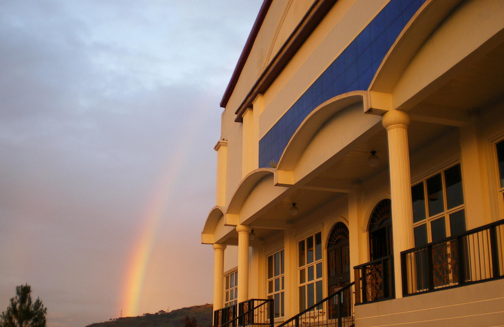

Keys of the Kingdom Ministries - Life in the Spirit Fellowship International (KKM-LSFI)
Welcome
Vision
To proclaim, preach, teach, build, and establish the Kingdom of God by bringing the Good News of the Kingdom to everyone (men, women, youth and children) that Jesus Christ be acknowledged, accepted, and received as Lord and Savior of our lives and that every born-again, Spirit-filled believers be molded and shaped into the likeness and image of Jesus Christ the Cornerstone for which the foundation of the Keys of the Kingdom Ministries – Life in the Spirit Fellowship, Inc. is built and established. Likewise, the saints be equipped with the living and revealed truth of God’s Word, so that the Christian can be truly powerful, productive and effective witness for service in the Kingdom as a living witness for the Lord Jesus Christ, in his or her personal life’s testimony as a believer and disciple, in his ministry to God, in his ministry to the body of Christ, and in His ministry to the world.
Statement of Faith
- We believe that there is only one true and living God; and that in the unity of the God-head, there are three persons namely: God the Father, God the Son and God the Holy Spirit, equal in divine perfection, working together in harmony, in Creation, Redemption and Sanctification.
- We believe that the Bible is the Inspired Word of God to man and is the only basis of sound truth and doctrine. The Bible is the infallible and authoritative Word of God. It is the sole authority of our faith and practice. It contains the basic doctrine in Christian living, Christian discipline and Christian Worship.
- We believe in the virgin birth of our Lord Jesus Christ, and that Jesus was conceived by the Holy Spirit of the Virgin Mary, and was born into the world as the SON OF GOD AND SON OF MAN.
- We believe that Salvation is only achieved through faith in JESUS CHRIST.
- We believe that the Holy Spirit is the third person of the Holy Trinity, that convicts the world of sin, of judgment and of righteousness, and that He (The Holy Spirit) bears witness for the Lord Jesus Christ, in fulfilling the great commission, accompanied with signs and wonders and miracles and furthermore we believe that the evidence of the Baptism of the Holy Spirit in the life of the Christian is the evidence of speaking in tongues.
- We believe that Water Baptism is by immersion, and likewise the Lord’s Supper or Holy Communion are ordinances mandated by our Lord for His church to do.
- We believe that God has established the Local Church, endowed with ministry gifts to equip the saints for the work of service in the Kingdom of God, so that the believers, who are united by the covenant of faith and the fellowship of the Gospel, will truly be fed, cared, strengthened, nurtured, protected and blessed. The Local Church is mandated to fulfill the great commission, in the power and in the anointing of the Holy Spirit, who guides, leads and directs its Mission.
- We believe in the autonomy of the Local Church; and that God’s method of supporting the local church operation is by means of congregational giving, particularly the giving of the Tithes and Offering.
- We believe in the Theocratic type of Church Government, whereby the authority to govern rest in the undershepherd whom the Lord has called to govern and Shepherd God’s Flocks.